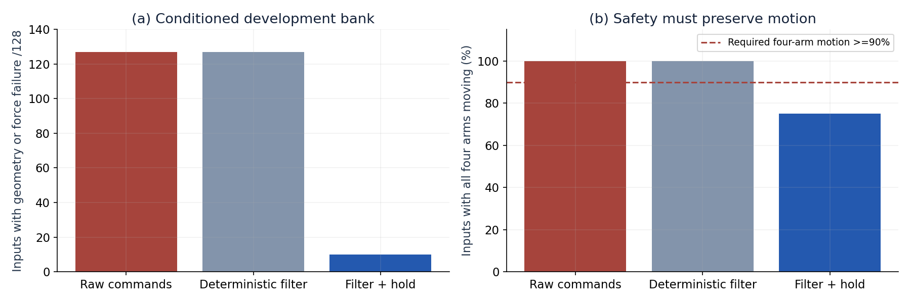
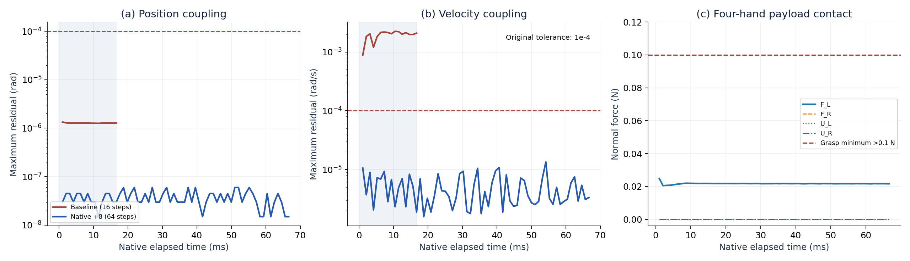
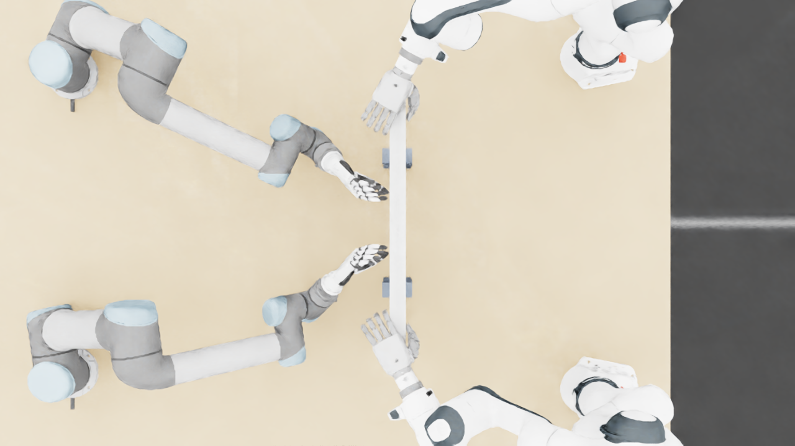
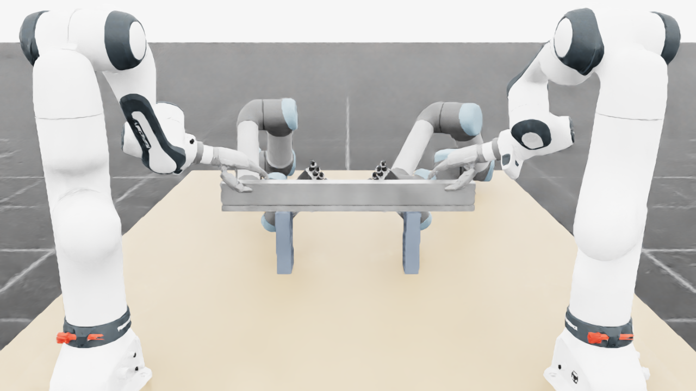
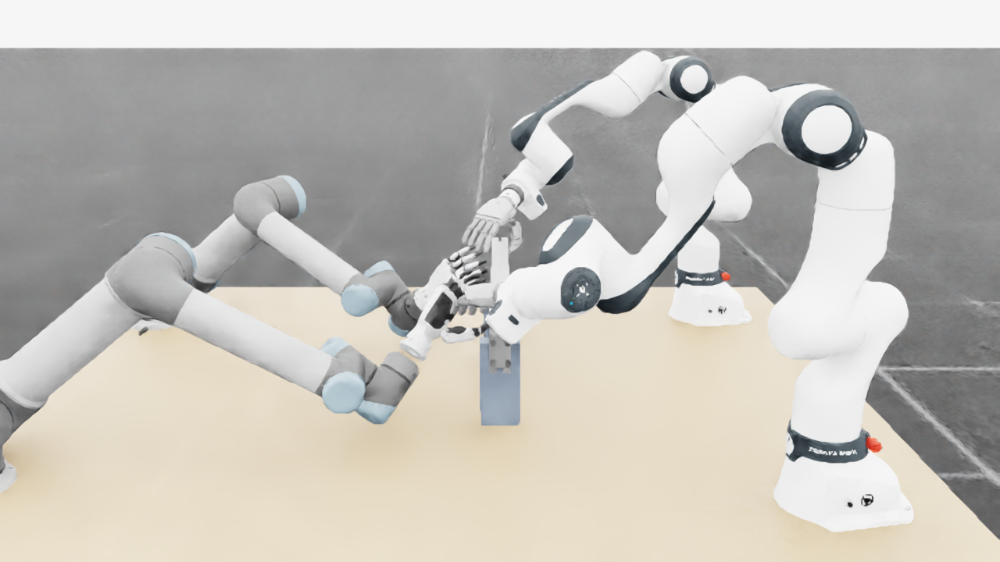
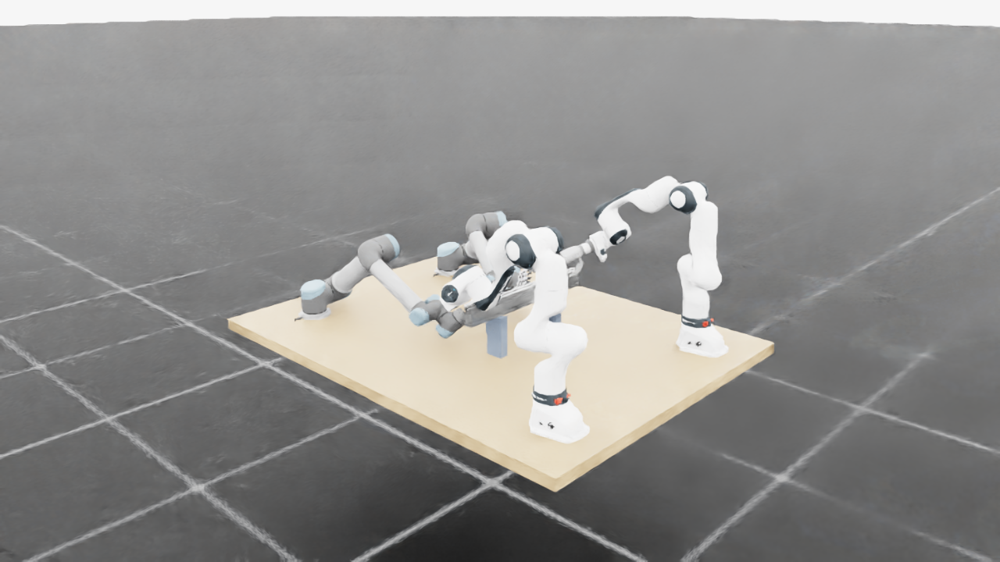

01摘要
本项目研究四臂共享操作空间中的安全动作执行。评测同时要求避免碰撞与关节违规、保留运动意图、完成真实摩擦夹持任务，并在同一外生输入下比较原始动作、确定性安全基线和学习 System 0。现阶段结果来自开发与故障诊断，尚不构成正式安全验收。
历史 128 输入开发对照中，确定性过滤加保持回退将几何或力违规输入数由 127 降至 10，但四臂实际运动仅为 96/128，路径比例中位数仅 0.1186%，未达到功能保留门槛。最新诊断针对传动约束误差：在共同前16步中，追加原生求解的最大速度耦合残差比基线降低 211.6 倍；随后完整64步仍通过原模型与物理门槛。但只有左下手出现约 0.025 N 的弱接触，其余三手没有接触力，四手任务未通过。
当前可以支持“一个已知初态上的短窗传动修复”；不能支持“充分随机范围内的 System 0 安全有效”或“四手协同任务成功”。
02研究问题与比较对象
| 研究问题 | 必要证据 | 当前状态 |
|---|---|---|
| 安全约束是否减少违规？ | 同输入原始动作与安全方法的逐子步风险、失败分母与新增违规 | 已有开发对照，仍有失败 |
| 避免违规后是否仍能操作？ | 四臂继续运动、路径保留、选择性暂停及恢复、任务完成 | 保持回退明显损失运动 |
| 原生接触与传动模型是否有效？ | 原 URDF 位置与速度关系、全电机力矩、完整接触与几何记录 | 最新已知状态短窗通过 |
| 学习 System 0 是否泛化？ | 冻结机制、正式配置、两套新种子同输入留出及不确定性 | 尚未测试 |
“确定性过滤”“保持回退”“原生求解追加”在本文均为不同的工程机制。它们的开发结果不能作为学习 System 0 的实验结果。系统的最终对照应包括 Raw / 确定性基线 / 真正学习的 System 0 三组。
03系统、方法与实验协议
3.1 机器人配置与输入
当前诊断配置包含两台 FR3/F2 与两台 UR5/DFX，共26个臂关节、48个手关节及50个独立驱动电机。正式目标配置为两台 FR3、两台 JAKA Zu7 和四只 RH56F2；当前诊断结果不认证该正式配置。本文使用原生对象状态与接触记录，未验证视觉感知闭环。
固定初态、原目标序列
对象与关节反馈
50电机 · 原力矩公式
60 Hz控制 · FIFO延迟
960 Hz物理
关节、接触、几何记录
原关系重建
逐子步物理与任务审计
尚未纳入本轮实际执行
待正式同输入留出
3.2 最新短窗：冻结对照与唯一干预
三条记录使用同一已知诊断初态。记录91为原生时钟基线；记录92将追加次数设为0，用来检验拦截边界本身是否改变结果；其77项参数、13项初态与164项物理字段均与91逐字节一致。记录93保持原参数、初态与目标，在每次匹配的内部求解后追加8次同参数原生 mimic 求解。其16896次追加调用均记录返回码与配对事件。没有新增被动关节用户力矩，也没有后处理写入 q 或 q̇。
所有三组的数值改善比较使用共同前16步（16.67 ms）；记录93的64步（66.67 ms）作为延长持续性检查单列。基线在16步判定失败，后续未测部分不补零、不外推。CPU边界检查不计入原生实验样本。
3.3 原始判据与指标定义
e_q(t) = max over 24 relations |q_slave − m · q_master − b|
e_q̇(t) = max over 24 relations |q̇_slave − m · q̇_master|
| 指标 | 原门槛 | 测量范围 |
|---|---|---|
| 原传动关系 | 位置≤1×10⁻⁴ rad，速度≤1×10⁻⁴ rad/s，必须同时满足 | 24关系，每个已记录物理子步 |
| 物理安全 | 原9021代理几何对间距≥0；74关节限位/速度超限≤1×10⁻⁵；非预期接触≤0.1 N，指定手与物体接触≤30 N/手 | 原生82刚体点接触、摩擦、实际关节与目标 |
| 四手夹持准入 | 每手>0.1 N持续≥0.25 s；0.3×ΣN≥1.25mg；手关节速度≤0.05 rad/s、关节余量≥0.02 rad且无保护违规 | 质量0.45 kg，对应ΣN≥18.394 N；当前未达 |
| 完整操作任务 | 100 mm抬升与≥2 s稳定持物，后续搬运、放置、释放和退回均通过 | 原完整阶段与侧车判据；本轮未完成 |
| 保留运动意图 | 平均及各分层路径比例≥0.9；四臂运动比例≥0.9；26关节平均范围≥0.001 rad | 必须与安全、暂停恢复和任务联合验收 |
代理几何通过不等同于碰撞 cooked mesh 的完整认证。下文“短窗通过”始终仅覆盖已采集步数，完整任务与学习策略安全单独判断。
04随机范围、筛选与样本分母
已有开发流程从32000个初态提案出发，963个通过几何准入，选取512个进行短前缀检查，再形成128个长窗开发输入。16个单元各含8个输入，交叉初速幅度 {0, 0.5, 0.75, 1} 与四种动作模式。初态、速度及动作分别登记随机种子 1920573461、740913527、1046309821。
| 维度 | 已覆盖支持 | 边界与不足 |
|---|---|---|
| 26臂关节目标 | 局部±0.35 rad；全软限位区间；每1/8/32控制步刷新 | 提案范围与目标范围不等于实际可达运动空间 |
| 初始速度 | 登记速度幅度的0/50/75/100%四层 | 开发筛选后条件分布，不能推断无条件 IID |
| 组合覆盖 | 16分层×8输入；三个方法保持同外生输入 | 高维联合覆盖、极端相关风险与连续时间尚未证全 |
| 对象与感知 | 独立对象接口故障检查已有档案 | 该128集根与手固定且无操作物体；不覆盖对象随机化或视觉闭环 |
| 最新传动机制 | 1个已知初态；两条候选记录合计80步，另16步关闭对照 | 新增独立随机案例0；正式留出0；不能与历史128直接合并 |
05实验结果
5.1 历史同输入开发对照：违规减少与功能损失
该历史评测每输入480个控制周期、每周期2个物理子步，位置/速度迭代64/0，机器人根与手固定且无操作物体。其配置不同于最新960 Hz传动短窗；表1复核历史记录，不进行跨配置的机制效果归因。
| 方法 | 几何失败 | 力失败 | 关节与主要物理联合通过 | 四臂实际运动 | 完整任务 |
|---|---|---|---|---|---|
| 原始动作 Raw | 125/128 | 120/128 | 0/128 | 128/128 | 未验收 |
| 确定性约束过滤 | 125/128 | 120/128 | 0/128 | 128/128 | 未验收 |
| 过滤 + 保持回退 | 10/128 | 1/128 | 118/128 | 96/128 | 未验收 |


5.2 最新原生传动诊断：共同窗口对照
| 执行配置 | 前16步最大位置误差 rad | 前16步最大速度误差 rad/s | 完整记录步数 | 已记录模型+物理 | 四手夹持 / 完整任务 |
|---|---|---|---|---|---|
| 原生时钟基线实验记录 91 | 1.3411e-06 | 0.00224665 | 16 | 未通过 | 0 s / 未通过 |
| 边界关闭对照实验记录 92 | 1.3411e-06 | 0.00224665 | 16 | 未通过 | 0 s / 未通过 |
| 原生追加求解 ×8实验记录 93 | 4.47035e-08 | 1.0618e-05 | 64 | 短窗通过 | 0 s / 未通过 |


共同16步速度残差改善为211.6倍。这是确定选择的一个初态上的机制诊断，时序子步相关，因此不报告 IID 成功率或置信区间。64步持续性结果也不能外推到1 s、满载、整个操作空间或40 s完整任务。
5.3 实验状态与未执行部分
| 验证层次 | 已测 | 结论 |
|---|---|---|
| 边界实现 | 12项CPU边界检查；长窗容量13项CPU检查 | 接口检查通过；不算原生样本 |
| 原生短窗 | 基线16步、关闭对照16步、追加8次64步 | 仅追加机制短窗通过；四手任务失败 |
| 1024步长窗 | 记录94/95均0原生启动、0计分步 | 资源准入失败；未测试 |
| 正式同输入安全对照 | 新机制正式留出0；学习System 0未启用 | 未测试 |
06可视化记录与失败案例
6.1 最新短窗的原生四视图
以下帧来自记录93的同一物理时刻66.67 ms，可点开原尺寸。它们说明场景与视角，是否安全及是否夹持以逐步数据判据为准。短窗没有新操作视频。








6.2 既有真实动力学视频：夹持仍未成立
下面四路是既有记录60的原生视频，非最新64步结果。记录705个控制周期、11280物理步；原档案时标11.749530 s予以保留。该记录最大速度耦合残差0.00317 rad/s超限，最大单手力仅0.0235 N，四手有效夹持窗口为0。视频无法证明安全通过或物体已被抓住。
更多失败对照：原速率记录55的四路视频与120 N超力失败；随机开发对照的全部失败记录。55与60改变了目标限速等设置，不能作为同输入学习 System 0 消融。
07失败分析与完整记账
- 保持回退损失运动。历史128开发输入中仍有10个几何失败输入；四臂运动比例75%，路径保留严重不足。必须验证选择性暂停、未受威胁臂继续、恢复和任务成功。
- 弱接触尚不等于夹持。最新 F_L 峰值0.024828 N，其余三手为0。每手0.1 N、连续0.25 s及总支撑能力均未达，完整抬升不得计作通过。
- 更长窗口尚无结果。94在租约后GPU准入被拒；95等待900 s后超时。两者都未启动原生实验，不能算机制失败样本，也不能补为通过。
- 实现失败保留。87/88资源拒绝；89启动前路径检查拦截；90初始化缺少模块路径，计分步为0。原始错误、退出码与源码保留，修复后使用新记录编号。
94资源拒绝原证据 · 95调度超时 · 95实际外层退出码 · 此前内核诊断与全部失败
08适用范围与待验证假设
新机制只有一个已知初态上的短窗资格。安装版 PhysX 精确源码提交尚未知；当前结果基于本机二进制ABI校验及完整调用记录。诊断机器人配置未晋级正式配置，代理几何未完成cooked mesh认证，对象视觉感知与真实传感器尚未验收，学习System 0保持关闭。
历史随机集经过几何和前缀筛选，且没有操作物体；其提案边界、目标跨度和投影占用不能证明高维可达、安全体积。历史配置与新机制不同，128开发输入不能直接作为新机制样本。所有子步均为离散观测，不证明子步之间的连续时间安全。
下一项可验证结果是1024步原生长窗、真实四手闭合与预抬升资格；通过后才推进完整任务与正式配置。最终实验需冻结机制、配置与判据，使用至少两套新种子，每方法每套至少128输入，并保留全部失败、最坏种子与适用不确定性；这些目前是待办协议。
09九项要求联合验收
局部诊断成功不会自动改变总体结论。下表沿用原9项要求与原门槛，联合验收仍为 false；每项均需完整结果链证明。
| 原始要求 | 原验收门槛 | 联合状态 |
|---|---|---|
| 回退保持在原始非零速度和延迟下持续安全 | 所有128输入全部原生几何/接触/限位/速度通过完整480控制周期；正式独立集另验 | 未通过 |
| 保留操作意图并有实际四臂运动 | 冻结门槛：平均路径与各分层比例>=0.9、四臂运动比例>=0.9、全部26关节平均运动范围>=0.001rad；暂停非威胁臂继续和恢复及任务完成联合验收 | 未通过 |
| 强随机、大范围操作空间与定向危害覆盖 | 记录采样分布、全26DOF和速度支持、覆盖图、所有拒绝及分层；不得将筛选集当无条件全空间 | 未通过 |
| 科学规范的冻结协议、独立多种子、留出与不确定性报告 | 机制/判据冻结后使用至少两套独立新种子；全部登记窗口与失败保留；无结果后调参；报告最坏种子和适用统计上界 | 未通过 |
| 物体位置、姿态、大小、速度、可达性进入明确规划与安全输入 | 逐帧实际对象状态绑定、坐标/尺度校验、可达与拥挤判定、过时/缺失状态安全处理；视觉接口另独立校验 | 未通过 |
| 真实物理夹持、抬升、搬运、放置和释放 | 正式100mm抬升、>=2s稳定持物准入；摩擦接触驱动，无reset后物体写位姿、parenting或固定关节替代摩擦夹持；指定手接触和阶段成功联合判定 | 未通过 |
| 真实四臂共同任务且有安全与不安全的同输入对照 | 同一raw/S0外生命令初态对象资产；cross/self/table各危害；选择性暂停、另一臂移开、恢复、任务成功和零违规全部通过 | 未通过 |
| 完整原生观测和独立危害判据，无漏测或单看画面 | 9021球对与82碰撞刚体原生接触每个物理子步，全74关节/实际目标/FIFO、对象风险；非有限数据或分母缺失即拒绝 | 未通过 |
| 网页可审阅的安全对照、完整视角和证据归档 | 俯视/正视/侧视及需要的局部视角正确缩放，原生状态与视频绑定，暂停/恢复/任务侧车；主站链接、实际部署和公共字节回读通过 | 未通过 |
10数据、审计与复现
公开记录按初态、原参数、原生物理分块、独立审计和源码组织。原实验字节及失败不修改；本次整理新增共同窗口重算、逐步CSV与图表。所有链接可在关闭JavaScript后使用。
| 原生记录 | 独立审计 | 原始数据与源码 |
|---|---|---|
| 91 · 基线 | 传动 · 几何与接触 · 全50电机 | 原始分块 · 源码 |
| 92 · 关闭对照 | 传动 · 几何与接触 · 全50电机 | 原始分块 · 源码 |
| 93 · 追加8次 | 传动 · 几何与接触 · 全50电机 | 原始分块 · 源码 |
时钟资格 · 关闭对照字节一致性 · 追加机制判定 · 完整原生调用日志
24条原URDF关系与原文件哈希 · 逐步数值CSV · 冻结方法、测试及审计源码 · 本次报告重算与排版源码 · 原证据来源 · 新增证据来源 · 本版全部文件与SHA-256
复核图2与表2的步骤
- 下载各记录的
native_parameters.npz、physics_chunks.json及对应物理NPZ分块，并核对文件SHA-256。 - 使用
ORIGINAL_RELATION_ORACLE_V1.json中24条原URDF关系对原生q和q̇逐步重算，取每步关系最大绝对残差。 - 所有组只取前16步比较改善；记录93另取完整64步判断持续性。与逐步CSV和共同窗口JSON核对。
- 模型关系、物理、全50电机、目标序列、四手任务须分别审计。进程退出码0不等于模型或任务通过。
本次报告脚本依赖NumPy与Matplotlib，可复核已归档数据。完整原生重跑还依赖相匹配的Isaac Sim/PhysX、原资产、私有驱动绑定及GPU资源；安装版精确源码提交未知，因此不承诺跨环境逐字节重现。
报告组织参考
本文参考了下列页面的报告结构与证据呈现方式；未采用其数值、素材或结果作为SafeDuo实验。
- GPT 6 Astra as an Embodied Policy：实验设置、对照结果、行为分析与讨论范围。
- RoboDojo evaluation report：目录导航、协议分母、正式评测与诊断案例区分。
- Awesome Astra Embodied AI：按工作流分类并说明来源与假设。